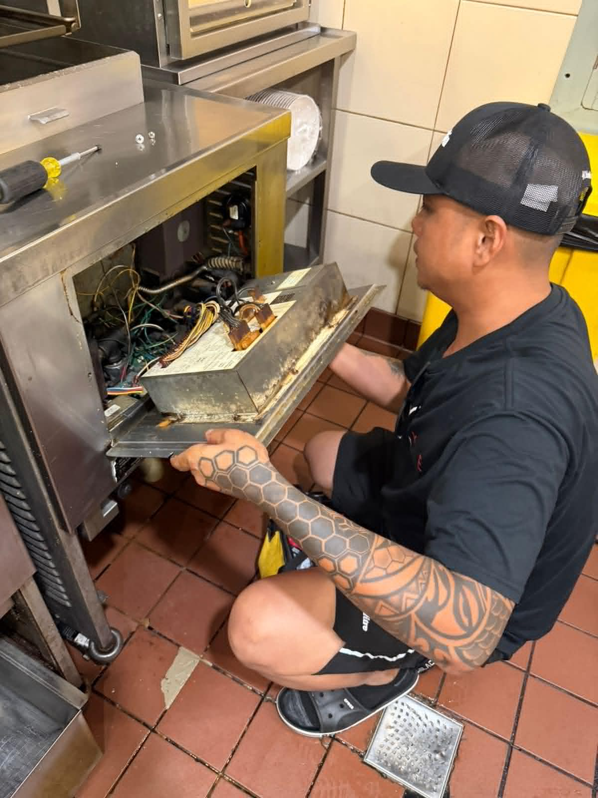
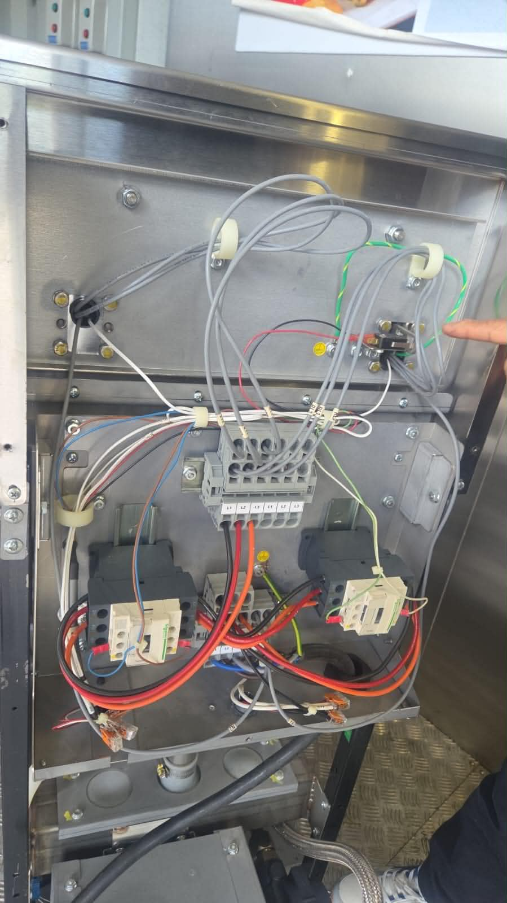
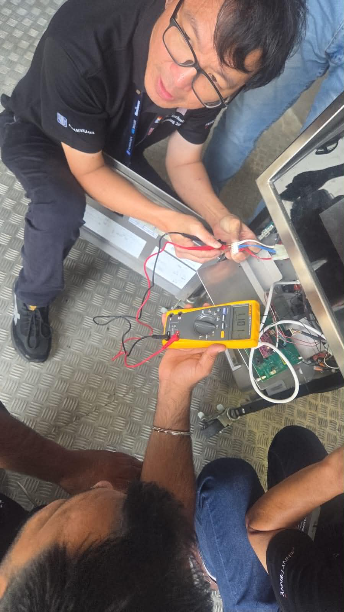
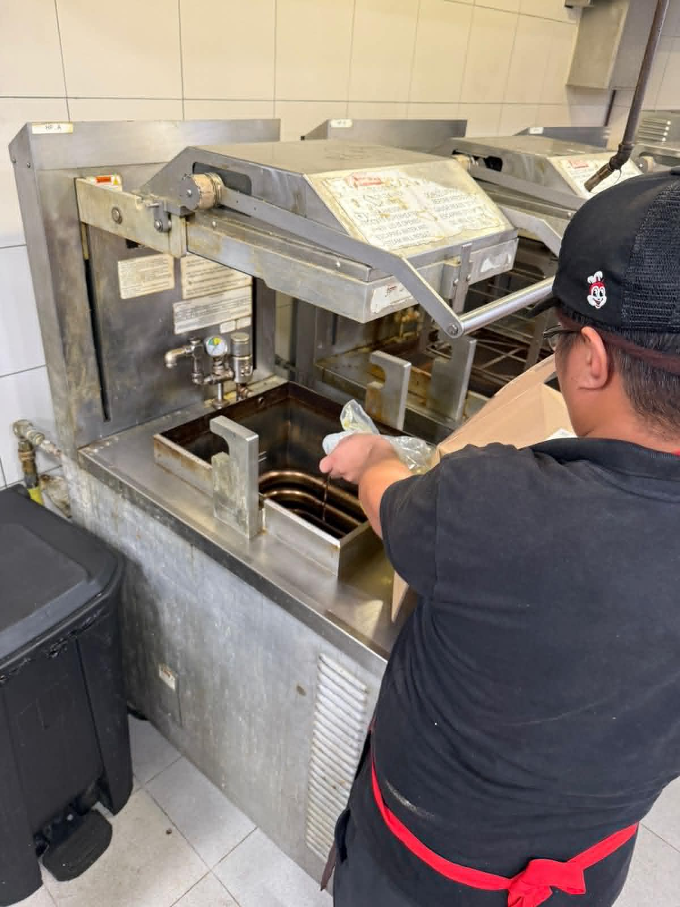
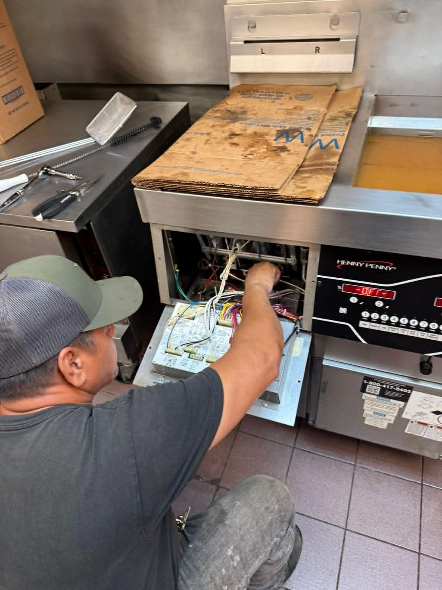

Equipment Service
Hands-on repair and inspection
Commercial Kitchen Service
Co Pacific Distributors helps foodservice operators with equipment service requests, preventive maintenance, parts support, and practical guidance to keep commercial kitchens operating smoothly.
Our Commitment
Commercial kitchens depend on equipment that works every day. When fryers, ovens, holding cabinets, or other kitchen equipment need attention, clear communication and fast next steps matter.
Our service support focuses on helping operators reduce downtime, prepare the right information, and move from problem to solution as smoothly as possible.
Equipment troubleshooting support
Preventive maintenance guidance
Parts and accessory assistance
Support for commercial kitchen operators in Guam
Quick Response
For faster support, prepare the equipment brand, model number, serial number, issue description, and photos of the data plate or problem area.
Real Service Work
From fryer maintenance to electrical diagnostics and equipment checks, our service work focuses on keeping Guam kitchens operating safely and reliably.





Service in Action
Watch equipment checks, fryer diagnostics, tank inspection, cleaning, and maintenance work performed on commercial kitchen equipment.
Service review of fryer settings, heating status, and control panel operation.
Service Support
Whether you are dealing with a sudden equipment issue or planning preventive maintenance, we help you organize the right information and request the right support.
Request support for fryers, ovens, holding cabinets, and other commercial kitchen equipment used in demanding operations.
Help reduce downtime by checking equipment condition, cleaning needs, wear parts, filters, and operating issues before they grow.
Get help identifying and requesting replacement parts, accessories, filters, baskets, and service-related components.
Request help for open fryers and pressure fryers, including performance issues, filtration concerns, and replacement parts.
Support for holding cabinets and warming equipment to help keep food ready, consistent, and safe during rush periods.
We help review your request and guide the next step based on your equipment details, urgency, and operational needs.
Preventive Maintenance
Preventive maintenance helps commercial kitchens stay ready for daily operations. Regular checks can help identify worn parts, cleaning needs, performance issues, and possible failures before they create costly downtime.
Request Maintenance SupportReview performance, filtration concerns, temperature issues, and common service warning signs.
Request help with cooking, holding, heating, and temperature consistency concerns.
Identify filters, baskets, gaskets, accessories, and replacement parts before they become urgent.
Before You Request Service
The more complete your information is, the easier it is to identify the equipment, understand the problem, and guide the next step.
Provide the brand, equipment type, model number, serial number, and location of the unit.
Explain what happened, when it started, error messages, unusual sounds, leaks, heating issues, or performance changes.
Send photos of the data plate, damaged area, display screen, part, or anything that helps explain the issue.
Request Service
Start with the basic details. If you have model number, serial number, urgency level, or photos, add them under optional details.
Ready When You Are
Tell us what your kitchen needs and we’ll help guide the right next step.